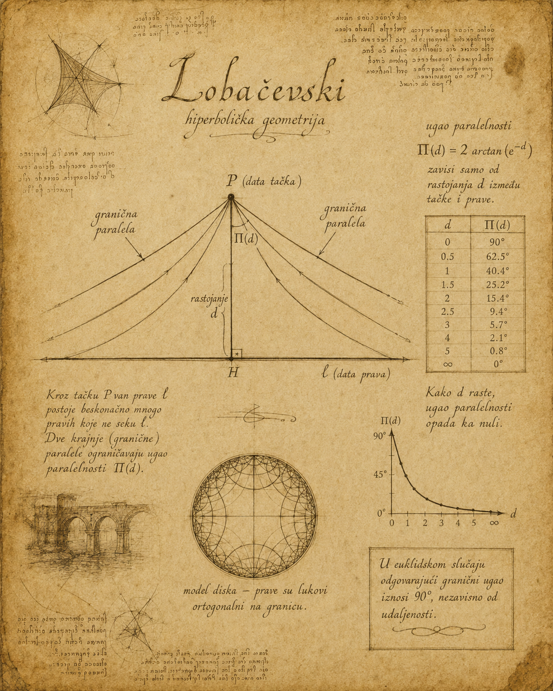
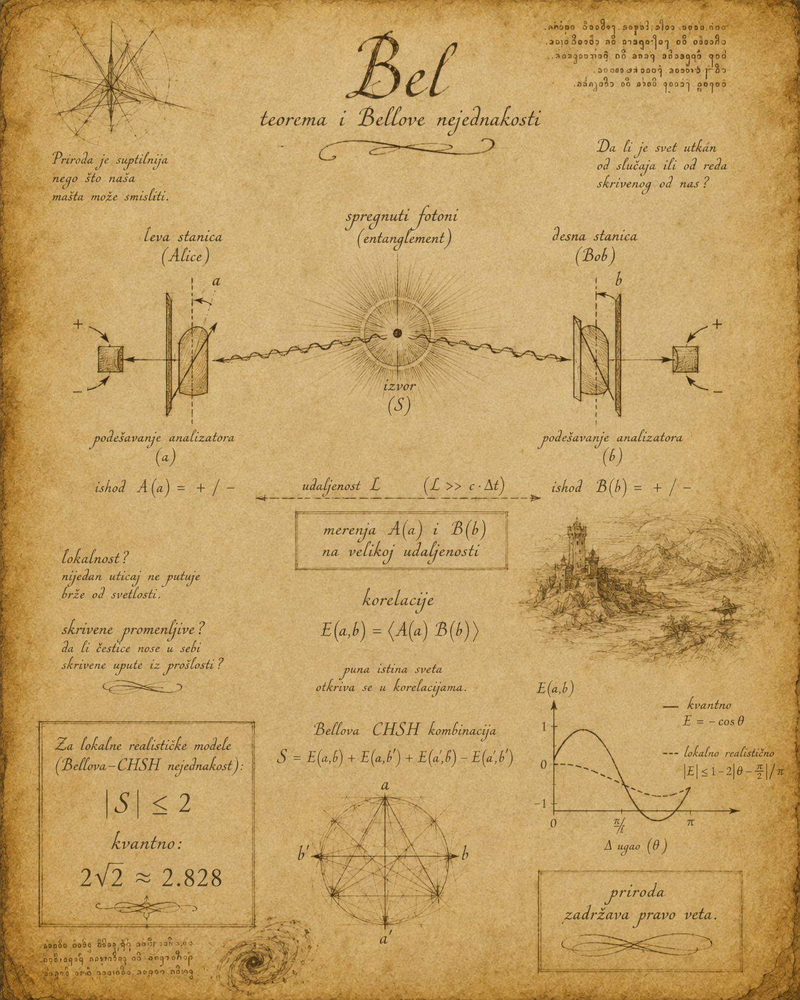

Eseji, nauka i ideje
Od Lobačevskog do Bela
Kada intuicija izgubi pravo veta

U školi smo naučili jednu od onih rečenica koje zvuče toliko sigurno da ih kasnije više i ne primećujemo:
Zbir unutrašnjih uglova trougla iznosi 180 stepeni.
Tačno. Ali nedostaje mali dodatak koji menja čitavu stvar: u Euklidskoj ravni.
Trougao nacrtan na ravnom listu papira, školskoj tabli ili idealnoj geometrijskoj ravni ima zbir uglova od 180 stepeni. Međutim, čovek ne živi na beskonačnom ravnom listu papira. Živi na površini planete.
Trougao koji ne sluša školu
Zamislimo trougao na Zemlji čije stranice prate najpravije moguće puteve po sfernoj površini — lukove velikih krugova, odnosno geodezijske linije.
Krenimo sa Severnog pola jednim meridijanom do ekvatora. Zatim pređimo četvrtinu ekvatora, pa se drugim meridijanom vratimo na Severni pol.
Dobili smo trougao sa tri prava ugla:
Nije se pokvario trougao. Promenila se geometrija.
Na sfernoj površini zbir uglova geodezijskog trougla veći je od 180 stepeni. Na negativno zakrivljenoj, hiperboličkoj površini manji je od 180. Samo u Euklidskoj ravni iznosi tačno 180 stepeni.
Euklid opisuje idealno ravan svet
Euklidska geometrija nije pogrešna. Ona je izuzetno precizna i korisna tamo gde se zakrivljenost može zanemariti. Kada zidar meri zid, stolar pravi sto, a metalostrugar obrađuje komad metala, nema potrebe da u račun ubacuje Zemljinu zakrivljenost.
Na malim rastojanjima površina planete ponaša se gotovo kao ravan. Zato Euklidska geometrija veoma dobro opisuje lokalnu aproksimaciju čovekovog sveta, ali ne i njegovu ukupnu geometrijsku strukturu.
Površina Zemlje nije savršena sfera, ali je sferna geometrija njena mnogo bolja globalna aproksimacija nego Euklidska ravan. Hi hi hi.
Lobačevski i zabranjeno pitanje
Vekovima se činilo da Euklidov peti postulat mora nekako slediti iz ostalih aksioma. Lobačevski je napravio radikalniji potez: zapitao se šta se događa ako taj postulat nije nužan.
Rezultat nije bila protivrečnost, nego hiperbolička geometrija — dosledan sistem u kojem kroz tačku izvan date prave prolazi više pravih koje je ne seku.
U toj geometriji postoje dve posebne granične paralele. Ugao paralelnosti zavisi od rastojanja tačke od prave. Udaljenost, dakle, učestvuje u određivanju graničnog pravca.
To je duboka razlika — da ne kažem suštinska, a kazaću: SUŠTINSKA.
A gde se u sve to umešao Bel?

Lobačevski govori o pravama, uglovima i prostoru. Džon Bel govori o merenjima udaljenih kvantnih sistema. Njihove teorije nisu iste, ali između njihovih poduhvata postoji važna misaona sličnost.
Pre Lobačevskog činilo se samorazumljivim da je Euklidov peti postulat nekakva logička nužnost. Pre Bela činilo se razumnim pretpostaviti da fizički sistemi poseduju lokalna, unapred određena svojstva, bez obzira na to merimo li ih ili ne.
Belova teorema pokazuje da široka klasa lokalnih teorija sa skrivenim promenljivama mora zadovoljavati određena ograničenja — Belove nejednakosti. Kvantna mehanika predviđa korelacije koje ta ograničenja mogu prekršiti, a eksperimenti su takva kršenja potvrdili.
To ne znači da je svaka zamisliva teorija skrivenih promenljivih nemoguća. Znači da jednostavna slika po kojoj čestice unapred nose kompletan skup lokalnih odgovora ne može reprodukovati sve kvantne korelacije.
Ne ruši se logika — ruši se navika
Lobačevski nije pokazao da je Euklid bio pogrešan. Pokazao je da Euklidova geometrija nije jedina moguća dosledna geometrija.
Bel nije pokazao da je priroda nelogična. Pokazao je da se naše klasične pretpostavke o lokalnosti i unapred postojećim vrednostima ne mogu sve zajedno održati pred kvantnim eksperimentom.
U oba slučaja ne ruši se razum. Ruši se naša navika da sopstvenu intuiciju proglašavamo zakonom sveta.
Jedan je oduzeo Euklidu monopol nad prostorom. Drugi je klasičnoj fizici oduzeo monopol nad stvarnošću.
Matematika može da bira — priroda zadržava pravo veta
U matematici možemo izabrati aksiome i istražiti njihove posledice. Euklidska, hiperbolička i druge geometrije mogu biti istovremeno logički dosledne.
Matematika pita: Šta sledi ako ovo pretpostavimo?
Fizika pita: Koju od tih mogućnosti priroda zaista ostvaruje?
Opšta teorija relativnosti ide korak dalje i gravitaciju opisuje geometrijom prostor-vremena. U prisustvu mase i energije sama pozornica nije nepomična — ona učestvuje u predstavi.
Trougao kao dokaz protiv samouverenosti
Običan trougao na Zemlji pokazuje da jedna od prvih geometrijskih istina koje naučimo nije istina bez uslova. Zbir uglova iznosi 180 stepeni samo kada su ispunjene pretpostavke Euklidske ravni.
Ni broj 180 nije vlast prirode. On je posledica geometrije.
Euklid radi, ali pod određenim uslovima. Lokalne skrivene promenljive deluju razumno, ali daju posledice koje možemo eksperimentalno proveriti. U oba slučaja intuicija može da predloži odgovor. Ne može da ga propiše.
Nije priroda izgubila razum. Samo je čovekova intuicija izgubila pravo veta.